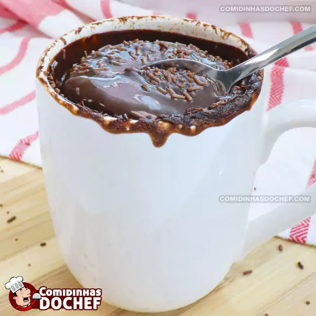

Confira como fazer bolo de caneca no microondas
bolo de caneca
Bolo rápido de chocolate feito com Farinha de Trigo
SIM! é rapido e facil de aprender. Para essa receita vamos precisar dos seguintes ingredientes:
INGREDIENTES
04 colheres de farinha de trigo
04colheres (sopa) de chocolate em pó
01 colher (sopa) de açúcar
03 colheres (sopa) de leite
01 colher (sopa) de óleo
1/2 colher (café) de fermento químico em pó
MODO DE PREPARO
1-Em uma caneca que possa ir ao micro-ondas, coloque o óleo, o açúcar, o chocolate em pó e o leite. Misture bem com a ajuda de uma colher
Vamos levar para o micro-ondas2- coloque seu preparo de massa no micro-ondas
3- Leve por 3 minutos no microondas na potência máxima.
4- Se preferir faça uma calda
Bolo pronto, é só se deliciar!
Gostou da receita? nos siga em nossas redes sociais!